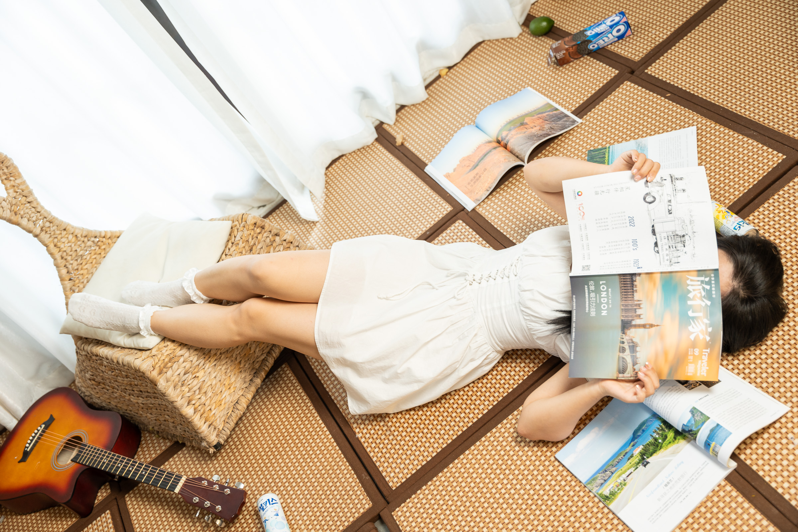
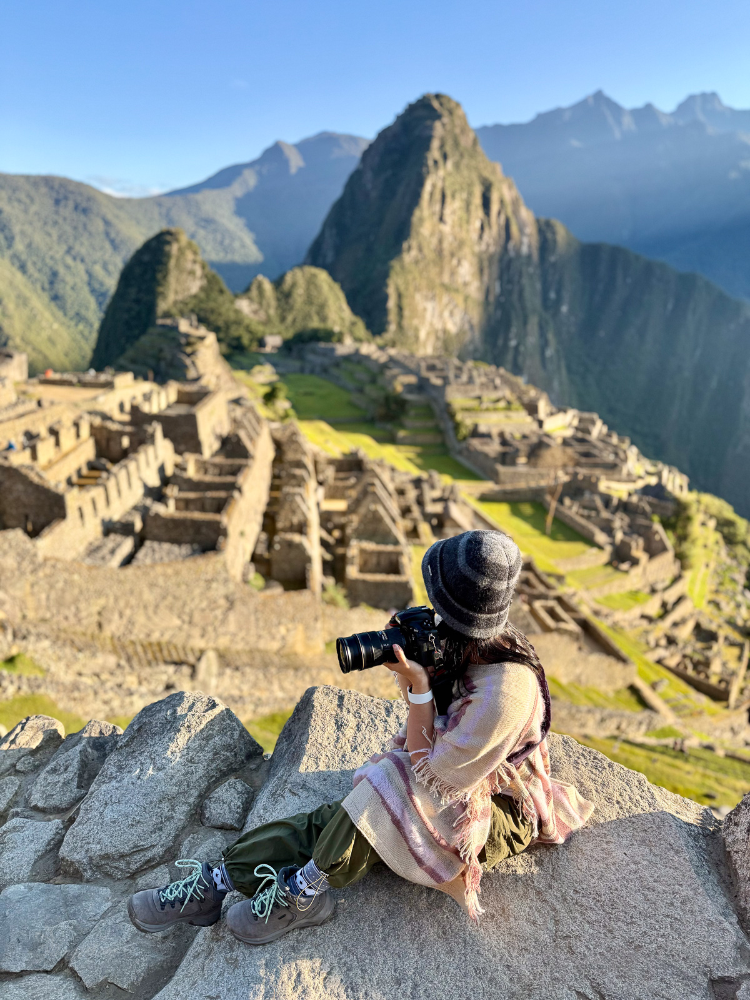
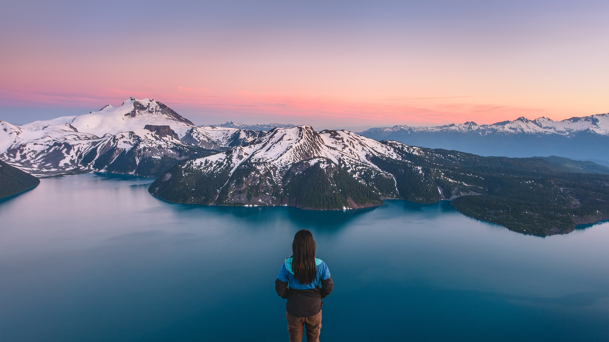

嗨嗨，最近给网站来了一次大更新！ 之前被多次提及的页面载入速度过慢的问题在替换了所有的缩略图后终于被解决了。这可是大工程，多谢我的developer~除了新增的各类相册外，这次还多了全新的游记页面。 因为这些年来我高质量的图文受到了旅行家杂志的认可，所以一直在定期刊登我的作品。有很多买不到杂志的朋友也想阅读怎么办呢？ 那只能我亲手做一个电子版啦。会慢~慢~更新的。也有一些主题因为各种原因没能登上杂志，但我也会一点点写出来的，毕竟是我感兴趣的东西。 因为摄影水平得到身边人的认可，近一年也帮亲朋好友拍了不少全家福订婚照。能帮他们保留这 些非常有纪念意义的时刻，让我也备感荣幸。期待有机会拍摄更多主题!——————————————————————————————

嗨~有一阵子没更新了哈。都是新冠的错。好吧，不完全是新冠啦。我花了几年的时间去应对人生中不期而遇的一些变化和各种旅行限制。这次更新了两个相册又新加了十三个相册，证明了虽然重启旅行不容易，但我还是做到了。
除了自然和商业，现在又增加了都市系列。我也从只拍大自然变成兼拍人文了。未来还有更多精彩的旅行计划，但我不打算剧透。想要分享的还有我的新爱好，那就是滑雪！冬天我将化身滑雪教练，让我们有缘雪道上见吧。
——————————————————————————————

嗨〜我是玛丽。我出生于中国，高中的时候随父母移居到加拿大。从小我就是一个只会学习的乖乖女，没什么远大的志向，连大学专业也是随便选的。可哪里知道原来我的身体里一直藏着一颗躁动的心。小时候要环游世界的戏言在毕业后的这几年里渐渐变成了现实。在短短三年内我的足迹遍布加拿大12个省份，美国近一半的国土，亚洲，南美洲，非洲，欧洲和南极洲。从不会做饭到野外露营，从御宅一族变成户外能手。现在的我登过乞力马扎罗，骑过雪地摩托车，坐过滑翔伞，与海豚游过泳，上天下海没什么不敢尝试的。旅行帮助我认识这个世界和了解我自己。
说起摄影，15岁时我因为要追星才有了自己的第一台相机，瞎拍了几年也没什么进步，一直把摄影当作爱好。直到现在我也没有接受过系统的教育，一切有关照相和修片的知识都是从网上自学的。当我开始认真旅行后，我发现这一路上看到的美好风景如果不用相机记录下来的话，就太可惜了。而且随着我见识得越多，我就越珍惜大自然的瑰丽。于是相机包越来越重，拍的照片也越积越多，修图时间也越来越长。
建立这个网站的初心是把自己这些年的作品进行一个归总。能与大家分享我这些年的所见和所得，我已经满心感激。谢谢你的光临。